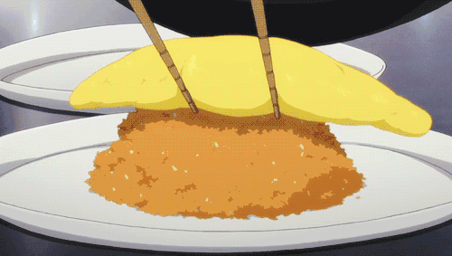

¿Qué es el Omuraisu?
No toda la gastronomía japonesa es tradicional.
Al contrario, muchas de las recetas populares en el Japón actual vienen de la adaptación de
platos de otros países al paladar japonés. Un ejemplo perfecto es la omuraisu (combinación de la palabra “omelette” y “rice”),
una tortilla rellena de arroz y otros ingredientes con un toque de tomate o, comúnmente, ketchup.
La omuraisu es un plato muy popular, que acepta muchísimas variaciones en el relleno y
que a los niños les encanta. De hecho, la verás siempre en menús infantiles, junto con karaage o
gambas rebozadas, porque es una comida que suele gustar a todos los pequeños.

Este plato de corte occidental pero adaptado al gusto japonés se sirvió por primera vez en
el restaurante de estilo occidental Renga-tei (en el barrio de Ginza, Tokio) en 1902.
Se dice que el chef del restaurante se inspiró en una antigua receta de chakin-zushi,
una especie de arroz de sushi aderezado con una fina lámina de huevo frito.
Como se suele decir, el resto es historia. Y es que esta tortilla japonesa es fácil de encontrar por todo el país,
con restaurantes especializados en ella, incluso.
Al igual que pasa con el onigiri o los onigirazu, que aceptan muchísimos ingredientes como relleno,
aquí también puedes dejar volar tu imaginación.
De cualquier forma, en este artículo te enseñaremos cómo preparar omurice de arroz
de la forma más tradicional y casera posible, de forma que puedas
disfrutarlo como suelen disfrutarlo en la mayoría de hogares japoneses.